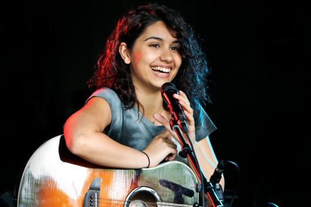
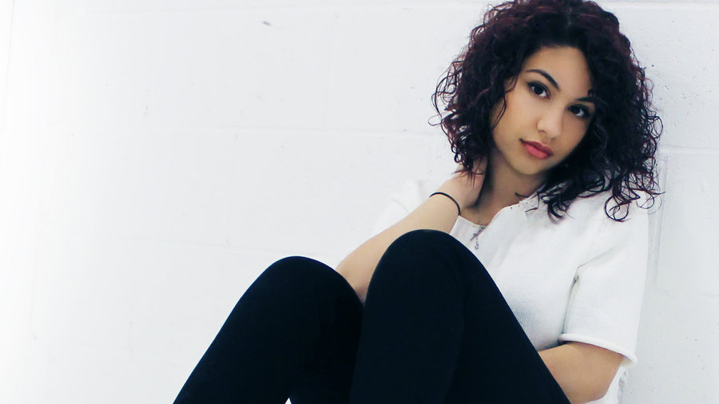

Cara's singing and writing style has been compared to singers such as Lorde, Amy Winehouse, Rihanna, and Norah Jones.[9][10] She also appeared on various radio stations; including 15 Seconds of Fame on Mix 104.1 Boston.[11] In 2015, she signed a deal with EP Entertainment imprint, along the distribution of Def Jam Recordings.[12][13] In April 2015, Cara released her official debut single, through Def Jam.[14] Titled "Here", it was described as a "song for everyone who secretly hates parties" by MTV.[12] Produced by Pop & Oak and Sebastian Kole, the song is her personal experience with going to a party before realizing how much she hated parties.[4] On May 5, 2015, the song was chosen as the "can't-miss" track by Spin,[2] as well as being listed as a "must hear song" by Cosmopolitan.[10] The song was also named one of the best Canadian songs of April by Complex[15] and included on Billboard's "20 Pop Songs You Need For Your Summer Playlist" in June 2015.[16] Rolling Stone later ranked "Here" at number 21 on its year-end list of the 50 best songs of 2015.[17] On July 29, 2015, Cara made her first-televised debut performing her single, "Here" on The Tonight Show Starring Jimmy Fallon.[18] "Here" then received a nomination for the "Original Song" at the Streamy Award.[19] She released the EP Four Pink Walls, containing five songs; including her debut single, "Here".[20] Her debut album Know-It-All was released on November 13, 2015.[21][22] She was short-listed for the BBC Music Sound of... award for 2016 and finished as the runner-up.[23] Cara was awarded as Breakthrough Artist of the Year at the 2016 Juno Awards.[24] On March 7, 2016, the official video for "Wild Things" was released.[25] In April 2016, Cara was announced to be one of the supporting acts of British alternative rock band Coldplay in the European and North American legs of their A Head Full of Dreams Tour.[26] On June 23, 2016, Cara was featured in a re-released version of the song "Wild" by Troye Sivan. She played Glastonbury Festival on June 24, 2016, in the John Peel tent. The music video for Cara's single "How Far I'll Go", from the Disney film Moana, was released on November 3, 2016.[27] The song was written by Lin-Manuel Miranda and the video was directed by Aya Tanimura.[28] Cara released a music video for "Seventeen" in December 2016.[29][30] Cara performed on Saturday Night Live as the musical guest for February 4, 2017.
 